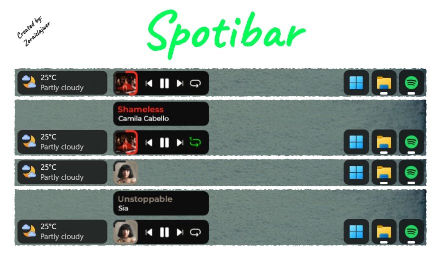

A clean, interactive media controller skin for Rainmeter. Launch Spotify directly from your taskbar, view beautiful playback summaries, and enjoy continuous dynamic themes.

A minimalist skin tailored perfectly to look like a native Windows 11 taskbar tool.
Both the circular progress bar around the album art and the song title text dynamically extract and adopt an accent color matching the current track's album cover.
Hovering over the album cover reveals context menus (Controls Panel or Song Info Panel). The skin automatically minimizes back to just a Spotify icon if the media application isn't active.
Not using the desktop application? Enjoy full functionality inside your web browser by pairing the skin layout with the WebNowPlaying browser extension.
Follow these structured configuration steps to anchor Spotibar smoothly down inside your Windows environment.
Ensure you have the standard Spotify Desktop application installed. You also need Rainmeter 4.5.18 (or newer) running on your PC. To use Spotify Web, download the WebNowPlaying extension.
Download the official package release from the Spotibar Releases on GitHub. Open Rainmeter, hit refresh, and extract/load the layout.
To keep your navigation locked precisely onto the taskbar frame, configure the loaded skin parameters with these settings:
Stay topmost